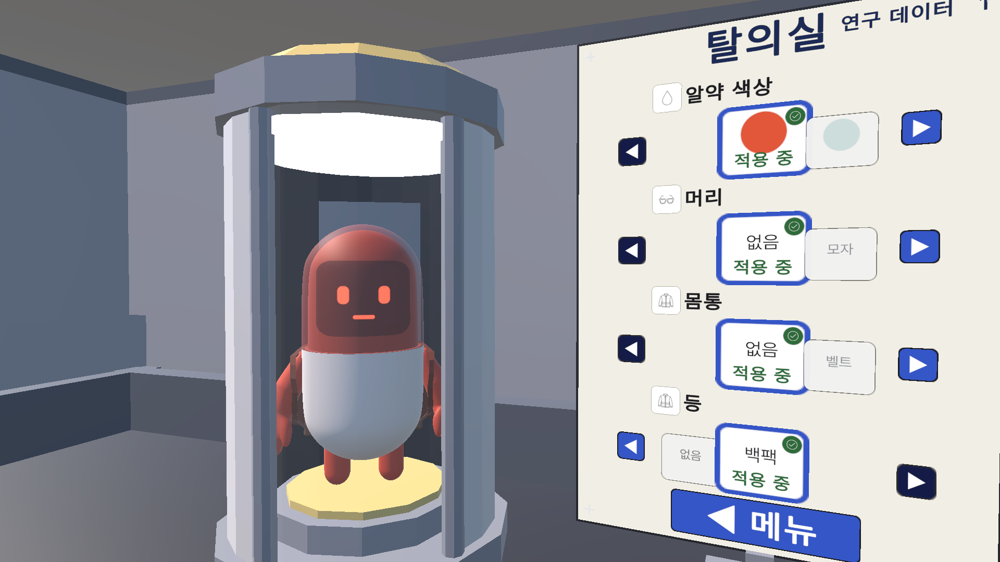

서버 권위 네트워킹
Netcode for GameObjects와 Unity Relay를 사용해 서버 권위 방식의 온라인 협동 기반을 구성했습니다.
위 속에 투입된 알약 요원이 되어 세균과 기생충 보스를 뚫고 동료와 함께 탈출구까지 살아남는 온라인 협동 게임입니다.
1인 개발 · 포지션: 게임 개발(기획·개발·아트) · AI 에이전트와 협업 · 개발 기여도 100%

런타임·에디터·테스트의 책임을 나눈 3-asmdef 구조로 구성했습니다. 어셈블리는 IntoStomach.Runtime, IntoStomach.Editor, IntoStomach.Tests입니다.
Netcode for GameObjects와 Unity Relay를 사용해 서버 권위 방식의 온라인 협동 기반을 구성했습니다.
OnTriggerEnter 계열 대신 SphereCast와 OverlapSphere를 사용하는 폴링 기반 판정으로 게임플레이 물리를 구성했습니다.
절차 생성 아트를 기본으로 두고 블렌더 모델이 준비되면 오버라이드하는 파이프라인을 구성했습니다.
GameBalanceConfig를 밸런스 값의 단일 소스로 삼아 설정이 흩어지지 않도록 했습니다.
한 에이전트에 모든 판단을 맡기지 않고 구현 전후의 검토 역할을 나눴습니다.
전체 설계를 세우고 각 결과를 통합한 뒤 최종 검토를 맡았습니다.
OpenAI CLI로 호출하고 범위를 좁힌 쓰기 권한만 부여해 정해진 구현을 담당하게 했습니다.
Gemini 기반 반론 담당 서브에이전트로서 구현 전에 계획을 공격해 결함을 찾았습니다.
구현이 끝난 뒤 결과에 남은 결함을 검증하는 서브에이전트 역할을 맡았습니다.
FoodPieceDebris에 손수 만든 낙하 로직을 적용하자 조각이 공중에 멈추고, 바닥에서는 서로 파고드는 버그가 실제로 발생했습니다.
레이캐스트와 반경 겹침 해소 로직을 계속 보완해 원칙을 유지할지, 문제가 난 음식 조각만 동적 리지드바디에 맡길지를 비교했습니다.
실제로 동작하는 결과를 우선하되 예외가 번지지 않도록 FoodPieceDebris 한 경우에만 동적 리지드바디를 허용했습니다.
보스는 기어가는 바인드 포즈에서 4.0m, 몸을 세운 자세에서 6.4m로 높이가 달라 한 자세를 기준으로 잡으면 다른 자세의 크기가 어긋났습니다.
4.0m의 기어가는 자세와 6.4m의 세운 자세 가운데 하나를 높이 기준으로 삼는 방법과, 자세에 덜 흔들리는 몸 길이를 기준으로 삼는 방법을 비교했습니다.
높이 대신 전장 20m에서 스케일을 역산해 자세가 바뀌어도 보스의 크기가 일관되게 보이도록 했습니다.
스케일 커브 규칙을 고친 뒤에도 임포터 버전이 그대로여서 며칠간 캐시된 옛 결과가 쓰였고, 캐릭터 애니메이션 클립 43개가 모두 낡은 상태였습니다.
필요할 때마다 강제 재임포트를 기억해서 실행할지, 임포터 코드가 바뀔 때 버전 번호도 함께 올려 캐시를 무효화할지를 비교했습니다.
강제 재임포트 때 유니티가 불일치 경고를 내면서 원인을 찾았습니다. 같은 문제가 조용히 반복되지 않도록 임포터 수정 시 버전 번호를 반드시 올리는 규칙을 세웠습니다.
2026-08-10 기준으로 27일간 344커밋을 기록했습니다. 최다 커밋일은 07-24의 27건이며, 27일 가운데 5일은 커밋 공백이었습니다.
프로젝트의 기본 구조와 개발 기반을 세웠습니다.
온라인 협동 시스템을 안정화하는 단계로 전환했습니다.
협동 플레이의 중심이 되는 보스 전투를 완성했습니다.
게임의 UI를 다시 설계하는 전환점을 거쳤습니다.
역할을 분리한 외부 AI 도구 협업 방식을 개발 과정에 정착시켰습니다.